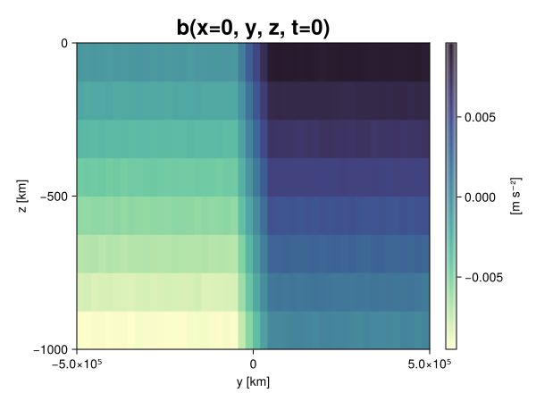
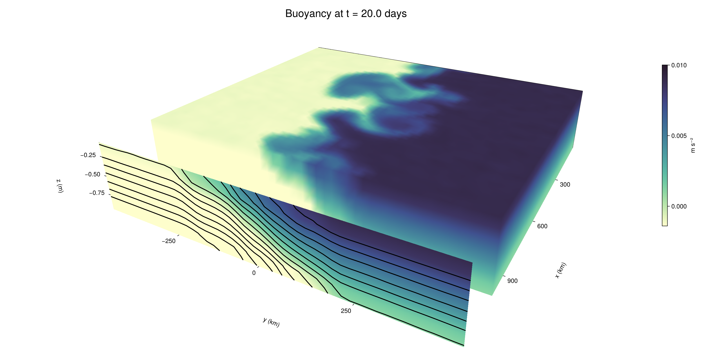

Baroclinic adjustment
In this example, we simulate the evolution and equilibration of a baroclinically unstable front.
Install dependencies
First let's make sure we have all required packages installed.
using Pkg
pkg"add Oceananigans, CairoMakie"using Oceananigans
using Oceananigans.UnitsGrid
We use a three-dimensional channel that is periodic in the x direction:
Lx = 1000kilometers # east-west extent [m]
Ly = 1000kilometers # north-south extent [m]
Lz = 1kilometers # depth [m]
grid = RectilinearGrid(size = (48, 48, 8),
x = (0, Lx),
y = (-Ly/2, Ly/2),
z = (-Lz, 0),
topology = (Periodic, Bounded, Bounded))48×48×8 RectilinearGrid{Float64, Periodic, Bounded, Bounded} on CPU with 3×3×3 halo
├── Periodic x ∈ [0.0, 1.0e6) regularly spaced with Δx=20833.3
├── Bounded y ∈ [-500000.0, 500000.0] regularly spaced with Δy=20833.3
└── Bounded z ∈ [-1000.0, 0.0] regularly spaced with Δz=125.0Model
We built a HydrostaticFreeSurfaceModel with an ImplicitFreeSurface solver. Regarding Coriolis, we use a beta-plane centered at 45° South.
model = HydrostaticFreeSurfaceModel(; grid,
coriolis = BetaPlane(latitude = -45),
buoyancy = BuoyancyTracer(),
tracers = :b,
momentum_advection = WENO(),
tracer_advection = WENO())HydrostaticFreeSurfaceModel{CPU, RectilinearGrid}(time = 0 seconds, iteration = 0)
├── grid: 48×48×8 RectilinearGrid{Float64, Periodic, Bounded, Bounded} on CPU with 3×3×3 halo
├── timestepper: QuasiAdamsBashforth2TimeStepper
├── tracers: b
├── closure: Nothing
├── buoyancy: BuoyancyTracer with ĝ = NegativeZDirection()
├── free surface: ImplicitFreeSurface with gravitational acceleration 9.80665 m s⁻²
│ └── solver: FFTImplicitFreeSurfaceSolver
├── advection scheme:
│ ├── momentum: WENO reconstruction order 5
│ └── b: WENO reconstruction order 5
└── coriolis: BetaPlane{Float64}We start our simulation from rest with a baroclinically unstable buoyancy distribution. We use ramp(y, Δy), defined below, to specify a front with width Δy and horizontal buoyancy gradient M². We impose the front on top of a vertical buoyancy gradient N² and a bit of noise.
"""
ramp(y, Δy)
Linear ramp from 0 to 1 between -Δy/2 and +Δy/2.
For example:
```
y < -Δy/2 => ramp = 0
-Δy/2 < y < -Δy/2 => ramp = y / Δy
y > Δy/2 => ramp = 1
```
"""
ramp(y, Δy) = min(max(0, y/Δy + 1/2), 1)
N² = 1e-5 # [s⁻²] buoyancy frequency / stratification
M² = 1e-7 # [s⁻²] horizontal buoyancy gradient
Δy = 100kilometers # width of the region of the front
Δb = Δy * M² # buoyancy jump associated with the front
ϵb = 1e-2 * Δb # noise amplitude
bᵢ(x, y, z) = N² * z + Δb * ramp(y, Δy) + ϵb * randn()
set!(model, b=bᵢ)Let's visualize the initial buoyancy distribution.
using CairoMakie
# Build coordinates with units of kilometers
x, y, z = 1e-3 .* nodes(grid, (Center(), Center(), Center()))
b = model.tracers.b
fig, ax, hm = heatmap(view(b, 1, :, :),
colormap = :deep,
axis = (xlabel = "y [km]",
ylabel = "z [km]",
title = "b(x=0, y, z, t=0)",
titlesize = 24))
Colorbar(fig[1, 2], hm, label = "[m s⁻²]")
fig
Simulation
Now let's build a Simulation.
simulation = Simulation(model, Δt=20minutes, stop_time=20days)Simulation of HydrostaticFreeSurfaceModel{CPU, RectilinearGrid}(time = 0 seconds, iteration = 0)
├── Next time step: 20 minutes
├── Elapsed wall time: 0 seconds
├── Wall time per iteration: NaN days
├── Stop time: 20 days
├── Stop iteration : Inf
├── Wall time limit: Inf
├── Callbacks: OrderedDict with 4 entries:
│ ├── stop_time_exceeded => Callback of stop_time_exceeded on IterationInterval(1)
│ ├── stop_iteration_exceeded => Callback of stop_iteration_exceeded on IterationInterval(1)
│ ├── wall_time_limit_exceeded => Callback of wall_time_limit_exceeded on IterationInterval(1)
│ └── nan_checker => Callback of NaNChecker for u on IterationInterval(100)
├── Output writers: OrderedDict with no entries
└── Diagnostics: OrderedDict with no entriesWe add a TimeStepWizard callback to adapt the simulation's time-step,
conjure_time_step_wizard!(simulation, IterationInterval(20), cfl=0.2, max_Δt=20minutes)Also, we add a callback to print a message about how the simulation is going,
using Printf
wall_clock = Ref(time_ns())
function print_progress(sim)
u, v, w = model.velocities
progress = 100 * (time(sim) / sim.stop_time)
elapsed = (time_ns() - wall_clock[]) / 1e9
@printf("[%05.2f%%] i: %d, t: %s, wall time: %s, max(u): (%6.3e, %6.3e, %6.3e) m/s, next Δt: %s\n",
progress, iteration(sim), prettytime(sim), prettytime(elapsed),
maximum(abs, u), maximum(abs, v), maximum(abs, w), prettytime(sim.Δt))
wall_clock[] = time_ns()
return nothing
end
add_callback!(simulation, print_progress, IterationInterval(100))Diagnostics/Output
Here, we save the buoyancy, $b$, at the edges of our domain as well as the zonal ($x$) average of buoyancy.
u, v, w = model.velocities
ζ = ∂x(v) - ∂y(u)
B = Average(b, dims=1)
U = Average(u, dims=1)
V = Average(v, dims=1)
filename = "baroclinic_adjustment"
save_fields_interval = 0.5day
slicers = (east = (grid.Nx, :, :),
north = (:, grid.Ny, :),
bottom = (:, :, 1),
top = (:, :, grid.Nz))
for side in keys(slicers)
indices = slicers[side]
simulation.output_writers[side] = JLD2OutputWriter(model, (; b, ζ);
filename = filename * "_$(side)_slice",
schedule = TimeInterval(save_fields_interval),
overwrite_existing = true,
indices)
end
simulation.output_writers[:zonal] = JLD2OutputWriter(model, (; b=B, u=U, v=V);
filename = filename * "_zonal_average",
schedule = TimeInterval(save_fields_interval),
overwrite_existing = true)JLD2OutputWriter scheduled on TimeInterval(12 hours):
├── filepath: baroclinic_adjustment_zonal_average.jld2
├── 3 outputs: (b, u, v)
├── array type: Array{Float64}
├── including: [:grid, :coriolis, :buoyancy, :closure]
├── file_splitting: NoFileSplitting
└── file size: 31.6 KiBNow we're ready to run.
@info "Running the simulation..."
run!(simulation)
@info "Simulation completed in " * prettytime(simulation.run_wall_time)[ Info: Running the simulation...
[ Info: Initializing simulation...
[00.00%] i: 0, t: 0 seconds, wall time: 30.369 seconds, max(u): (0.000e+00, 0.000e+00, 0.000e+00) m/s, next Δt: 20 minutes
[ Info: ... simulation initialization complete (29.239 seconds)
[ Info: Executing initial time step...
[ Info: ... initial time step complete (18.877 seconds).
[06.94%] i: 100, t: 1.389 days, wall time: 38.775 seconds, max(u): (1.309e-01, 1.113e-01, 1.626e-03) m/s, next Δt: 20 minutes
[13.89%] i: 200, t: 2.778 days, wall time: 1.003 seconds, max(u): (2.104e-01, 1.578e-01, 1.911e-03) m/s, next Δt: 20 minutes
[20.83%] i: 300, t: 4.167 days, wall time: 997.235 ms, max(u): (2.845e-01, 2.064e-01, 1.861e-03) m/s, next Δt: 20 minutes
[27.78%] i: 400, t: 5.556 days, wall time: 955.731 ms, max(u): (3.581e-01, 2.971e-01, 1.695e-03) m/s, next Δt: 20 minutes
[34.72%] i: 500, t: 6.944 days, wall time: 843.529 ms, max(u): (4.452e-01, 4.208e-01, 1.862e-03) m/s, next Δt: 20 minutes
[41.67%] i: 600, t: 8.333 days, wall time: 928.355 ms, max(u): (5.304e-01, 6.058e-01, 1.826e-03) m/s, next Δt: 20 minutes
[48.61%] i: 700, t: 9.722 days, wall time: 814.342 ms, max(u): (7.024e-01, 9.957e-01, 2.334e-03) m/s, next Δt: 20 minutes
[55.56%] i: 800, t: 11.111 days, wall time: 949.156 ms, max(u): (1.082e+00, 1.296e+00, 3.106e-03) m/s, next Δt: 20 minutes
[62.50%] i: 900, t: 12.500 days, wall time: 930.115 ms, max(u): (1.208e+00, 1.371e+00, 4.515e-03) m/s, next Δt: 20 minutes
[69.44%] i: 1000, t: 13.889 days, wall time: 920.291 ms, max(u): (1.375e+00, 1.284e+00, 4.308e-03) m/s, next Δt: 20 minutes
[76.39%] i: 1100, t: 15.278 days, wall time: 989.231 ms, max(u): (1.390e+00, 1.341e+00, 6.311e-03) m/s, next Δt: 20 minutes
[83.33%] i: 1200, t: 16.667 days, wall time: 951.008 ms, max(u): (1.443e+00, 1.273e+00, 6.368e-03) m/s, next Δt: 20 minutes
[90.28%] i: 1300, t: 18.056 days, wall time: 1.021 seconds, max(u): (1.429e+00, 1.115e+00, 3.687e-03) m/s, next Δt: 20 minutes
[97.22%] i: 1400, t: 19.444 days, wall time: 928.794 ms, max(u): (1.335e+00, 1.158e+00, 2.952e-03) m/s, next Δt: 20 minutes
[ Info: Simulation is stopping after running for 1.082 minutes.
[ Info: Simulation time 20 days equals or exceeds stop time 20 days.
[ Info: Simulation completed in 1.083 minutes
Visualization
All that's left is to make a pretty movie. Actually, we make two visualizations here. First, we illustrate how to make a 3D visualization with Makie's Axis3 and Makie.surface. Then we make a movie in 2D. We use CairoMakie in this example, but note that using GLMakie is more convenient on a system with OpenGL, as figures will be displayed on the screen.
using CairoMakieThree-dimensional visualization
We load the saved buoyancy output on the top, north, and east surface as FieldTimeSerieses.
filename = "baroclinic_adjustment"
sides = keys(slicers)
slice_filenames = NamedTuple(side => filename * "_$(side)_slice.jld2" for side in sides)
b_timeserieses = (east = FieldTimeSeries(slice_filenames.east, "b"),
north = FieldTimeSeries(slice_filenames.north, "b"),
top = FieldTimeSeries(slice_filenames.top, "b"))
B_timeseries = FieldTimeSeries(filename * "_zonal_average.jld2", "b")
times = B_timeseries.times
grid = B_timeseries.grid48×48×8 RectilinearGrid{Float64, Periodic, Bounded, Bounded} on CPU with 3×3×3 halo
├── Periodic x ∈ [0.0, 1.0e6) regularly spaced with Δx=20833.3
├── Bounded y ∈ [-500000.0, 500000.0] regularly spaced with Δy=20833.3
└── Bounded z ∈ [-1000.0, 0.0] regularly spaced with Δz=125.0We build the coordinates. We rescale horizontal coordinates to kilometers.
xb, yb, zb = nodes(b_timeserieses.east)
xb = xb ./ 1e3 # convert m -> km
yb = yb ./ 1e3 # convert m -> km
Nx, Ny, Nz = size(grid)
x_xz = repeat(x, 1, Nz)
y_xz_north = y[end] * ones(Nx, Nz)
z_xz = repeat(reshape(z, 1, Nz), Nx, 1)
x_yz_east = x[end] * ones(Ny, Nz)
y_yz = repeat(y, 1, Nz)
z_yz = repeat(reshape(z, 1, Nz), grid.Ny, 1)
x_xy = x
y_xy = y
z_xy_top = z[end] * ones(grid.Nx, grid.Ny)Then we create a 3D axis. We use zonal_slice_displacement to control where the plot of the instantaneous zonal average flow is located.
fig = Figure(size = (1600, 800))
zonal_slice_displacement = 1.2
ax = Axis3(fig[2, 1],
aspect=(1, 1, 1/5),
xlabel = "x (km)",
ylabel = "y (km)",
zlabel = "z (m)",
xlabeloffset = 100,
ylabeloffset = 100,
zlabeloffset = 100,
limits = ((x[1], zonal_slice_displacement * x[end]), (y[1], y[end]), (z[1], z[end])),
elevation = 0.45,
azimuth = 6.8,
xspinesvisible = false,
zgridvisible = false,
protrusions = 40,
perspectiveness = 0.7)Axis3()We use data from the final savepoint for the 3D plot. Note that this plot can easily be animated by using Makie's Observable. To dive into Observables, check out Makie.jl's Documentation.
n = length(times)41Now let's make a 3D plot of the buoyancy and in front of it we'll use the zonally-averaged output to plot the instantaneous zonal-average of the buoyancy.
b_slices = (east = interior(b_timeserieses.east[n], 1, :, :),
north = interior(b_timeserieses.north[n], :, 1, :),
top = interior(b_timeserieses.top[n], :, :, 1))
# Zonally-averaged buoyancy
B = interior(B_timeseries[n], 1, :, :)
clims = 1.1 .* extrema(b_timeserieses.top[n][:])
kwargs = (colorrange=clims, colormap=:deep, shading=NoShading)
surface!(ax, x_yz_east, y_yz, z_yz; color = b_slices.east, kwargs...)
surface!(ax, x_xz, y_xz_north, z_xz; color = b_slices.north, kwargs...)
surface!(ax, x_xy, y_xy, z_xy_top; color = b_slices.top, kwargs...)
sf = surface!(ax, zonal_slice_displacement .* x_yz_east, y_yz, z_yz; color = B, kwargs...)
contour!(ax, y, z, B; transformation = (:yz, zonal_slice_displacement * x[end]),
levels = 15, linewidth = 2, color = :black)
Colorbar(fig[2, 2], sf, label = "m s⁻²", height = Relative(0.4), tellheight=false)
title = "Buoyancy at t = " * string(round(times[n] / day, digits=1)) * " days"
fig[1, 1:2] = Label(fig, title; fontsize = 24, tellwidth = false, padding = (0, 0, -120, 0))
rowgap!(fig.layout, 1, Relative(-0.2))
colgap!(fig.layout, 1, Relative(-0.1))
save("baroclinic_adjustment_3d.png", fig)
Two-dimensional movie
We make a 2D movie that shows buoyancy $b$ and vertical vorticity $ζ$ at the surface, as well as the zonally-averaged zonal and meridional velocities $U$ and $V$ in the $(y, z)$ plane. First we load the FieldTimeSeries and extract the additional coordinates we'll need for plotting
ζ_timeseries = FieldTimeSeries(slice_filenames.top, "ζ")
U_timeseries = FieldTimeSeries(filename * "_zonal_average.jld2", "u")
B_timeseries = FieldTimeSeries(filename * "_zonal_average.jld2", "b")
V_timeseries = FieldTimeSeries(filename * "_zonal_average.jld2", "v")
xζ, yζ, zζ = nodes(ζ_timeseries)
yv = ynodes(V_timeseries)
xζ = xζ ./ 1e3 # convert m -> km
yζ = yζ ./ 1e3 # convert m -> km
yv = yv ./ 1e3 # convert m -> km49-element Vector{Float64}:
-500.0
-479.1666666666667
-458.3333333333333
-437.5
-416.6666666666667
-395.8333333333333
-375.0
-354.1666666666667
-333.3333333333333
-312.5
-291.6666666666667
-270.8333333333333
-250.0
-229.16666666666666
-208.33333333333334
-187.5
-166.66666666666666
-145.83333333333334
-125.0
-104.16666666666667
-83.33333333333333
-62.5
-41.666666666666664
-20.833333333333332
0.0
20.833333333333332
41.666666666666664
62.5
83.33333333333333
104.16666666666667
125.0
145.83333333333334
166.66666666666666
187.5
208.33333333333334
229.16666666666666
250.0
270.8333333333333
291.6666666666667
312.5
333.3333333333333
354.1666666666667
375.0
395.8333333333333
416.6666666666667
437.5
458.3333333333333
479.1666666666667
500.0Next, we set up a plot with 4 panels. The top panels are large and square, while the bottom panels get a reduced aspect ratio through rowsize!.
set_theme!(Theme(fontsize=24))
fig = Figure(size=(1800, 1000))
axb = Axis(fig[1, 2], xlabel="x (km)", ylabel="y (km)", aspect=1)
axζ = Axis(fig[1, 3], xlabel="x (km)", ylabel="y (km)", aspect=1, yaxisposition=:right)
axu = Axis(fig[2, 2], xlabel="y (km)", ylabel="z (m)")
axv = Axis(fig[2, 3], xlabel="y (km)", ylabel="z (m)", yaxisposition=:right)
rowsize!(fig.layout, 2, Relative(0.3))To prepare a plot for animation, we index the timeseries with an Observable,
n = Observable(1)
b_top = @lift interior(b_timeserieses.top[$n], :, :, 1)
ζ_top = @lift interior(ζ_timeseries[$n], :, :, 1)
U = @lift interior(U_timeseries[$n], 1, :, :)
V = @lift interior(V_timeseries[$n], 1, :, :)
B = @lift interior(B_timeseries[$n], 1, :, :)Observable([-0.009374658928840098 -0.008119663056006617 -0.006872072991715927 -0.005613058946131329 -0.004375692241113015 -0.0031128703293667897 -0.0018682397913903435 -0.0006158152468806797; -0.009374933769006085 -0.008102348251121917 -0.006878234165487764 -0.005627895319328893 -0.004375760192093118 -0.00312538511069058 -0.0019008531613921998 -0.0006140072650351222; -0.009374622557476444 -0.00813131837262084 -0.006866867870595432 -0.005628742231303802 -0.004369548802592935 -0.0031315286716269556 -0.001883270318562832 -0.0006253909960668036; -0.009370877368458224 -0.008109923516144901 -0.006876570505795412 -0.005625647065067958 -0.004392396527197571 -0.003136482012789594 -0.0018789099188587588 -0.0006096969018403411; -0.009364690451483972 -0.008132646890058281 -0.006892737964918867 -0.005611972338044946 -0.00437547788468249 -0.003120521596533029 -0.0018616902409521725 -0.0006421811893975812; -0.00938703964553819 -0.008113699203210551 -0.0068750237254731885 -0.005637657482813631 -0.004377745843889366 -0.003119199273742512 -0.0018897161352292296 -0.0006469977366696613; -0.009360362254007965 -0.008120777969786986 -0.006858034220340856 -0.0056192110413596855 -0.0043807689493715225 -0.0031547283506788465 -0.0018976150577980303 -0.000657512047914801; -0.009363295847828275 -0.008139593773476903 -0.006891410650715585 -0.0056227421691795254 -0.004376104037143337 -0.0031091545394497364 -0.0018863484777942158 -0.0006343188283134362; -0.009385963207876763 -0.0081528797378688 -0.0068653509119196215 -0.005594928814916259 -0.004348779451676486 -0.003129521533189008 -0.0018680562411005665 -0.0006505256566037275; -0.009392333916525535 -0.00811843361896525 -0.006870745628387746 -0.005631961548631562 -0.0043707456054516945 -0.003134975324736102 -0.0018800358460681992 -0.0006371585620872093; -0.009376929882885581 -0.008139010395991754 -0.006860315415868655 -0.005626007746095548 -0.004387114964785519 -0.003114593809656821 -0.0018547328751799136 -0.0006362195626653382; -0.009388686728479522 -0.008135921145306684 -0.006847246237606109 -0.005612051100373665 -0.004376506789756162 -0.0031510783198378336 -0.0018669776620628819 -0.000634499964383843; -0.009369533374434623 -0.008161745969074166 -0.00686941785929072 -0.005613442604631275 -0.004393637239196497 -0.00313379612744534 -0.0019137771660765644 -0.0006357938076032837; -0.009382201488219251 -0.008141982060227313 -0.0068881741598434245 -0.005632624577156746 -0.004393846416589301 -0.003137199749499084 -0.0018901413619653777 -0.0006361354792884274; -0.00937777120339519 -0.008120715341858325 -0.006845931238885165 -0.005605016538064532 -0.0044018001293310545 -0.003143830062061271 -0.0018457117765157082 -0.0006210322433029801; -0.009384092285999054 -0.008112871711916117 -0.006871744250205951 -0.005629006691510926 -0.004377930147395952 -0.0031067071221246973 -0.0018678408068370626 -0.0006372600150621196; -0.009389662313217466 -0.008123808345924305 -0.006880258727616501 -0.005623405868168116 -0.004376030234020917 -0.003159380035656915 -0.00187237565664541 -0.0006257293580705844; -0.009389329918869154 -0.008125144387002193 -0.006839281400907882 -0.0056281998191484855 -0.004369695554644116 -0.0031003542210934465 -0.0018854556450116414 -0.0006275529582535987; -0.009349257811433788 -0.008140635910489783 -0.0068624835829431815 -0.005637417092542445 -0.004386240035741791 -0.0031121187557483555 -0.0018599410623148602 -0.0006303300376994532; -0.009371120465515352 -0.008134359891687733 -0.006884279348541397 -0.005601227516311761 -0.004410807306079603 -0.0031229740757058796 -0.0018736891332245458 -0.0006059459269503359; -0.009356243809045163 -0.008120220615393843 -0.0068631727752524714 -0.005611755106072403 -0.004361004239030291 -0.0031415340040641727 -0.0018482660670457267 -0.0006071125343143361; -0.009350881345894005 -0.008130587805640853 -0.006880814986059472 -0.00562296936645693 -0.004378637219438226 -0.0031122728858872686 -0.0018559129407690652 -0.0006267868570724991; -0.007491695538309639 -0.006256295771977218 -0.004991957750552189 -0.0037474835444353967 -0.002502808736878565 -0.0012443623917297562 3.864431326397026e-6 0.001235930663354772; -0.005414395081480246 -0.0041207436433255045 -0.0029068165144791234 -0.0016594754526363185 -0.0004116921032858934 0.00080388781637306 0.0020740116968264795 0.0033387693423783966; -0.003340924331772763 -0.0020692776685938955 -0.0008369741608370719 0.0004026462159886046 0.0016558666557712624 0.0029195096705088644 0.004179229389559992 0.005427976182715288; -0.0012535213328090827 2.176465188977112e-5 0.0012463662724141898 0.002501123592429306 0.0037533105266696286 0.004982460714623181 0.006237129905093157 0.007487607065313553; 0.0006517300423896583 0.0018675489423359626 0.0031258157525800856 0.0043813533340797154 0.005632032550824009 0.006871593725904753 0.008112139765275176 0.009381555314153293; 0.0006093306269800021 0.0018842787223197124 0.003116867648554155 0.004383509731602778 0.005632630074205194 0.006869764742012555 0.008119150539515821 0.009366868347355466; 0.0006253138695353983 0.0018557906851932396 0.003132654290803581 0.004398797722398032 0.005639795676052444 0.006905253662466522 0.008103329425952738 0.009411682094424193; 0.0006141297694229079 0.0018888981039162272 0.003125982949954227 0.004367382353029907 0.005615809957649326 0.006876560554251916 0.008118807178447941 0.009363879327567347; 0.0006286660494925769 0.0018636237805885894 0.0031103714305875294 0.0043698558411625855 0.005605513371965582 0.006869156338490479 0.00812076477591898 0.009390955253874391; 0.0006225009569708206 0.001866199287344275 0.0031218295021550983 0.004375539211845803 0.005628108006580268 0.0068814480993455536 0.0081116203535562 0.009401442732556609; 0.0006108196361537113 0.0018788192265350443 0.0031282372222255356 0.004401464788541696 0.005624991862034309 0.006854346486770496 0.008123726592149482 0.009380636094866402; 0.000626509583743533 0.0018786964361863024 0.0031389190315762295 0.00435674681865876 0.005628613090807861 0.006888360549599819 0.008105484801751588 0.009395749168241431; 0.0006216800887635672 0.0018670990645344744 0.003129056871711265 0.00437788122847312 0.005639381516180035 0.006874627867431917 0.008123084549590603 0.009396936785690169; 0.0006179220981600007 0.0018571902576098942 0.003105592584865351 0.004373902996539459 0.005608318025775771 0.006886259439219347 0.008102841010279043 0.00940219965421898; 0.0006124552053194588 0.001881900866534185 0.0031459965634963796 0.0043622236718217 0.005607777127258018 0.006889691897522476 0.008094121493304693 0.00940904643704581; 0.0006226097916090101 0.0018707056873823954 0.0031329329814290285 0.004335116817760802 0.005596853477169154 0.006883722823472593 0.008097769209156292 0.009367647911737295; 0.0006457529168209776 0.001878663628101484 0.0031044703450270605 0.0043614996853030006 0.0056061749297445325 0.006898636994946681 0.008136670472016043 0.009376126728665288; 0.0006247129086471903 0.0018659421333540843 0.0030971362457409336 0.004369566047806207 0.005634369210111529 0.006871217094571565 0.008132725522363009 0.009362072298361787; 0.0006276534286085803 0.0018611643069387403 0.003133773757980402 0.004399815207437026 0.005624419416435278 0.006884962865451022 0.008110186933083236 0.009371323612273897; 0.0006274463408096416 0.001865542828982759 0.0031265876790734608 0.004378493126561397 0.005637706265187413 0.006864474061490743 0.008136420780240008 0.009383905473326409; 0.0006218816239678377 0.0018832419168502762 0.0031431944091385566 0.004363561989197006 0.005644330412048075 0.006882864627528282 0.008139292296209777 0.00938422811411442; 0.0006257864319138311 0.0018687612775552976 0.003097408820586036 0.004381380690685013 0.005639295766109005 0.00687760011238233 0.008122918859196394 0.009382366092439892; 0.0006288429761653617 0.001872053860566265 0.003100170160537263 0.004395527136244571 0.005639304551031722 0.006881879748475206 0.008117285794578455 0.009372787770605323; 0.0006233757638701323 0.0018799619122542674 0.0030951201301665054 0.004358486996699951 0.0056414121121948525 0.006865125354372278 0.008127736937894077 0.009382025160965696; 0.0006389272114442978 0.0018741600000342998 0.003116702329548334 0.0043768148733735225 0.005608711753837536 0.00687522683190754 0.00812733942048731 0.009357681757719831; 0.0006215523728324955 0.0018743892780256897 0.0031313004965214976 0.004369282072642788 0.00563565913693954 0.006866094588006588 0.00815506922957953 0.009373395919934762])
and then build our plot:
hm = heatmap!(axb, xb, yb, b_top, colorrange=(0, Δb), colormap=:thermal)
Colorbar(fig[1, 1], hm, flipaxis=false, label="Surface b(x, y) (m s⁻²)")
hm = heatmap!(axζ, xζ, yζ, ζ_top, colorrange=(-5e-5, 5e-5), colormap=:balance)
Colorbar(fig[1, 4], hm, label="Surface ζ(x, y) (s⁻¹)")
hm = heatmap!(axu, yb, zb, U; colorrange=(-5e-1, 5e-1), colormap=:balance)
Colorbar(fig[2, 1], hm, flipaxis=false, label="Zonally-averaged U(y, z) (m s⁻¹)")
contour!(axu, yb, zb, B; levels=15, color=:black)
hm = heatmap!(axv, yv, zb, V; colorrange=(-1e-1, 1e-1), colormap=:balance)
Colorbar(fig[2, 4], hm, label="Zonally-averaged V(y, z) (m s⁻¹)")
contour!(axv, yb, zb, B; levels=15, color=:black)Finally, we're ready to record the movie.
frames = 1:length(times)
record(fig, filename * ".mp4", frames, framerate=8) do i
n[] = i
endThis page was generated using Literate.jl.